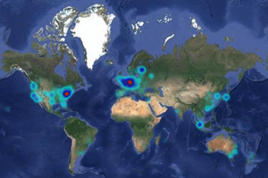
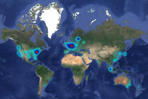

Making Ethereum alignment legible
2024 Sep 28
See all posts
Making Ethereum alignment legible
One of the most important social challenges in the Ethereum ecosystem
is balancing - or, more accurately, integrating,
decentralization and cooperation. The ecosystem's strength is
that there is a wide array of people and organizations - client
teams, researchers, layer
2 teams, application developers, local community groups - all
building toward their own visions of what Ethereum can be. The primary
challenge is making sure that all these projects are, collectively,
building something that feels like one Ethereum ecosystem, and not 138
incompatible fiefdoms.
To solve this challenge, many people throughout the Ethereum
ecosystem have brought up the concept of "Ethereum alignment". This can include values alignment (eg.
be open source, minimize centralization, support public goods),
technological alignment (eg. work with ecosystem-wide standards), and
economic alignment (eg. use ETH as a token where possible). However, the
concept has historically been poorly defined, and this creates risk of
social layer capture: if alignment means having the right
friends, then "alignment" as a concept has failed.
To solve this, I would argue that the concept of alignment
should be made more legible, decomposed into specific
properties, which can be represented by specific metrics. Each
person's list will be different, and metrics will inevitably change over
time. However, I think we already have some solid starting points.
- Open source - this is valuable for two reasons: (i)
code being inspectable to ensure security, and more importantly (ii)
reducing the risk of proprietary lockin and enabling permissionless
third-party improvements. Not every piece of every application needs to
be fully open source, but core infrastructure components that the
ecosystem depends on absolutely should be. The gold standard here is the
FSF free
software definition and OSI
open source definition.
- Open standards - striving for interoperability with
the Ethereum ecosystem and building on open standards, both the ones
that exist (eg. ERC-20, ERC-1271...) and those
that are under development (eg. account
abstraction, cross-L2 transfers, L1
and L2 light
client proofs, upcoming address format standards). If you want to
introduce a new feature that is not well-served by existing standards,
write a new ERC in collaboration with others. Applications and wallets
can be rated by which ERCs they are compatible with.
- Decentralization and security - avoiding points of
trust, minimizing censorship vulnerabilities, and minimizing centralized
infrastructure dependency. The natural metrics are (i) the
walkaway test: if your team and servers disappear tomorrow,
will your application still be usable, and (ii) the insider
attack test: if your team itself tries to attack the system,
how much will break, and how much harm could you do? An important
formalization is the L2beat
rollup stages.
- Positive-sum
- Toward Ethereum - the project succeeding should
benefit the whole Ethereum community (eg. ETH holders,
Ethereum users), even if they are not part of the
project's own ecosystem. Specific examples include using ETH as the
token (and thus contributing to its network effect), contributions to
open source technology, and commitments to donate a % of tokens or
revenue to Ethereum ecosystem-wide public goods.
- Toward the broader world - Ethereum is here to make
the world a more free and open place, enable new forms of ownership and
collaboration, and contribute positively to important challenges facing
humanity. Does your project do this? Examples include applications that
bring sustainable value to broader audiences (eg. financial inclusion),
% donations to beyond-Ethereum public goods, and building technology
with utility beyond crypto (eg. funding mechanisms, general computer
security) that actually gets used in those contexts.

Ethereum node map, source ethernodes.org
Obviously, not all of the above is applicable to each project. The
metrics that make sense for L2s, wallets, decentralized social media
applications, etc, are all going to look very different. Different
metrics may also change in priority: two years ago, rollups having
"training wheels" was more okay because it was "early days"; today, we
need to move to at least stage 1 ASAP. Today, the most legible metric
for being positive sum is commitments to donate a percentage of tokens,
which more and more projects are doing; tomorrow we can find metrics to
make other aspects of positive-sumness legible too.
My ideal goal here is that we see more entities like L2beat emerging to track how well
individual projects are meeting the above criteria, and other criteria
that the community comes up with. Instead of competing to have the right
friends, projects would compete to be as aligned as possible according
to clearly understandable criteria. The Ethereum Foundation should
remain one-step-removed from most of this: we fund L2beat, but
we should not be L2beat. Making the next L2beat is itself a
permissionless process.
This would also give the EF, and other organizations (and
individuals) interested in supporting and engaging with the ecosystem
while keeping their neutrality, a clearer route to determine which
projects to support and use. Each organization and individual can make
their own judgement about which criteria they care about the most, and
choose projects in part based on which ones best fit those criteria.
This makes it easier for both the EF and everyone else to become part of
the incentive for projects to be more aligned.
You can only be a meritocracy if merit is defined; otherwise, you
have a (likely exclusive and negative-sum) social game. Concerns about
"who watches the watchers" are best addressed not by betting everything
on an attempt to make sure everyone in positions of influence is an
angel, but through time-worn techniques like separation of
powers. "Dashboard organizations" like L2beat, block explorers,
and other ecosystem monitors are an excellent example
of such a principle working in the Ethereum ecosystem today. If we do
more to make different aspects of alignment legible, while not
centralizing in one single "watcher", we can make the concept much more
effective, and fair and inclusive in the way that the Ethereum ecosystem
strives to be.
Making Ethereum alignment legible
2024 Sep 28 See all postsOne of the most important social challenges in the Ethereum ecosystem is balancing - or, more accurately, integrating, decentralization and cooperation. The ecosystem's strength is that there is a wide array of people and organizations - client teams, researchers, layer 2 teams, application developers, local community groups - all building toward their own visions of what Ethereum can be. The primary challenge is making sure that all these projects are, collectively, building something that feels like one Ethereum ecosystem, and not 138 incompatible fiefdoms.
To solve this challenge, many people throughout the Ethereum ecosystem have brought up the concept of "Ethereum alignment". This can include values alignment (eg. be open source, minimize centralization, support public goods), technological alignment (eg. work with ecosystem-wide standards), and economic alignment (eg. use ETH as a token where possible). However, the concept has historically been poorly defined, and this creates risk of social layer capture: if alignment means having the right friends, then "alignment" as a concept has failed.
To solve this, I would argue that the concept of alignment should be made more legible, decomposed into specific properties, which can be represented by specific metrics. Each person's list will be different, and metrics will inevitably change over time. However, I think we already have some solid starting points.

Ethereum node map, source ethernodes.org
Obviously, not all of the above is applicable to each project. The metrics that make sense for L2s, wallets, decentralized social media applications, etc, are all going to look very different. Different metrics may also change in priority: two years ago, rollups having "training wheels" was more okay because it was "early days"; today, we need to move to at least stage 1 ASAP. Today, the most legible metric for being positive sum is commitments to donate a percentage of tokens, which more and more projects are doing; tomorrow we can find metrics to make other aspects of positive-sumness legible too.
My ideal goal here is that we see more entities like L2beat emerging to track how well individual projects are meeting the above criteria, and other criteria that the community comes up with. Instead of competing to have the right friends, projects would compete to be as aligned as possible according to clearly understandable criteria. The Ethereum Foundation should remain one-step-removed from most of this: we fund L2beat, but we should not be L2beat. Making the next L2beat is itself a permissionless process.
This would also give the EF, and other organizations (and individuals) interested in supporting and engaging with the ecosystem while keeping their neutrality, a clearer route to determine which projects to support and use. Each organization and individual can make their own judgement about which criteria they care about the most, and choose projects in part based on which ones best fit those criteria. This makes it easier for both the EF and everyone else to become part of the incentive for projects to be more aligned.
You can only be a meritocracy if merit is defined; otherwise, you have a (likely exclusive and negative-sum) social game. Concerns about "who watches the watchers" are best addressed not by betting everything on an attempt to make sure everyone in positions of influence is an angel, but through time-worn techniques like separation of powers. "Dashboard organizations" like L2beat, block explorers, and other ecosystem monitors are an excellent example of such a principle working in the Ethereum ecosystem today. If we do more to make different aspects of alignment legible, while not centralizing in one single "watcher", we can make the concept much more effective, and fair and inclusive in the way that the Ethereum ecosystem strives to be.